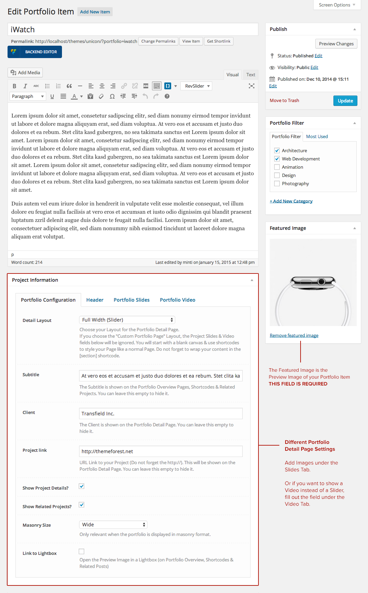
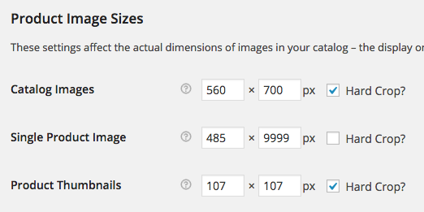

First of all a huge THANK YOU for purchasing our WordPress Theme at Themeforest. If you have any questions that are beyond the scope of this help file, please join our Support Forums. If you'd like to start a new thread over there we will get any issues you're experiencing sorted out. You can also follow us on Themeforest to keep track of all theme updates and future themes.
Before you start playing around with this Premium Theme, let's check what you've downloaded so far
First of all, if you are new to WordPress, we would recommend learning a little bit about it before you get started. Here are some helpful Resources to get you started with WordPress.
Here's also a small screencast of the installation process
In order to install this Theme into WordPress, you should directly upload the Unicon.zip file via the WordPress Theme Uploader.
A further option to install this Theme, would be to upload it via FTP manager. It really doesn't matter which of the two ways you choose, just choose the one you feel more comfortable with.
/wp-content/themesAt this stage you have probably noticed a warning asking you to install the recommended plugins. Installing these is very easy - you just need to click 'Begin installing plugins' and you will be redirected to the plugin installation page where you can install any Plugin you want and need. Only the Visual Composer Plugin is required. All other plugins are optional, depending on the functionality you wish to use.
Before you update this Theme, always check our important Update Information file for additional update Instructions.
The best and easiest way to update your Theme is via FTP. Just take the following Steps:
/wp-content/themesThis Theme includes the Demo Data which allows you to upload some dummy content to your site to help you get started with the Theme and get to know the functionality. Our Theme includes the famous One-Click Demo Importer. After the Installation of the theme, go to Appearance > Demo Import, choose your settings and Import the complete Demo Data. The standard content gets always imported (including pages, images, navigation). If you want to import the demo content for plugins (WooCommerce, Contactform 7, bbPress, Revolution Slider), make sure to install them before running the Importer!
If the One-Click Import did not work for any reason, you can install the Demo Data XML file manually taking the following steps.
If you don't want to import ALL sample pages and only need some specific pages from our demo website, you can create the pages individually. To use one of our pre-designed layouts, just copy and paste our demo code into the Editor of your page and save them. Make sure to paste the code in "HTML" Mode (not Visual).
Usually the demo import takes 5 to 10 minutes depending on the server speed & ram. If it loads forever this is 100% due to the server configuration or a security setting that does not allow to import content to your server. We have written a detailed article about that here.
If your hosting provider will not adjust the settings for you, the only option left would be to import the pages individually as described above.
As stated on the Theme Description Page, all images used in the preview are just for demonstration purposes and not included in the Theme. They require an appropriate license to be used. Here's a list for most of the images we use in our demo:
This happens when the Slider Demos are not installed. Just create your own and assign them to the appropriate page. Whenever you see this error, edit the page and replace our slider short code with your slider short code.
When you import the demo content and click the import button more than once, you will get duplicated content. To get rid of the duplicated content you can install the WP Reset Plugin. Be careful as this plugin will reset the complete database with all your pages, posts, menus, widgets, theme options & settings.
When you get an empty shop page after the Demo Import, make sure your "Shop Page" is set to the "Shop" Page in WooCommerce > Settings.
When you get an empty shop page after the Demo Import, make sure your "Shop Page" is set to the "Shop" Page in WooCommerce > Settings.
If you want to change any of the general Options in this Theme (Header, Footer, Styling, Layout, Customizations, etc.), go to your WordPress Admin Area and select Appearance > Theme Options. Here you will find a tabbed Navigation where you can change a lot of Options for your new Theme (General, Slider, Styling, Social Media Options)
Before adjusting the different settings, you should first click on the Save button, to insert all default data into the database and make sure everything looks good.
You need to set up custom menus for your Navigation to work properly. This Theme comes with a custom menu location at the top of the Page - the "Main Navigation", the "Footer Navigation" and "Topbar Navigation". These are optional shown or hidden depending on the settings you choose in the Theme Options.
If you would like to use a mega menu instead of the normal dropdown, you also need to take the following steps:
Go to Appearance > Menus and make sure that "CSS Classes" are turned on in your "Screen Options" tab in the upper right corner of your screen. If the box is checked you will see an input field for "CSS Classes" in each of your menu items.
Now add "megamenu columns-4" for a 4 Column Megamenu into the input field and set your menu items structure like shown below.
You can use "columns-2", "columns-3", "columns-4" or "columns-5" for a 2, 3, 4 or even 5-column Megamenu. Just make sure the menu structure matches the columns you want to use.
This Theme ships with a variety of custom page layouts. These layouts can be used on any page you create to give them some added functionality. To set up a custom page layout go to your WordPress Admin Area and navigate to Pages > Add New. Now you can choose any template you like from the "Page Attributes" on the right hand side.
In the Page Settings (below the Text Editor) you can find different options for the Page Templates. You can choose to assign a Sidebar, decide which Widgets you want to show, Enable / Disable the Header and Footer and use different Titlebar Styles.
To set up the Home Page of your theme go to your WordPress Admin Area and navigate to Pages > Add New. Choose a Title like "Home", add your content or copy one of the predefined page layouts above and click the publish button.
Now go to Settings > Reading select "A static page" and choose your newly created "Home"-page for the Front Page setting.
Also, please don't select anything for your Posts page (this is important!).
This Theme comes with tons of useful Short codes already built-in. In the custom page builder, you can easily create complex layouts. Unicon uses a slightly modified version of the popular Visual Composer plugin with some default short codes and some customized short codes. Not all of the original Visual Composer short codes are available with this theme or were replaced by our own ones.
The Frontend Editor of the Visual Composer was deactivated as there are some bugs and conflicts. We always watch out for updates and will activate the front end editor when a fix becomes available (if ever). This means that you will only be able to use the backend editor.
After the installation of the Visual Composer Plugin you may want to change some of the default Settings. Go to Settings > Visual Composer to setup the plugin. Select the post types you want the composer to be active.
In addition to the Visual Composer elements, there are some short codes which are not available in the Composer but can be added easily as regular short codes via a Text Block element or in the classic editor using the Short code Generator Button. It is far more flexible & effective to add buttons, alerts, social icons and tooltips to a Text Block element.
Just click on the Short code icon in the Text Editor and choose the element you wish to insert. Finally configure it with the short code Generator.
We simplified the way to create blogs compared to other themes. To create a blog page, just create a new Page and select the Blog Template from the Page Attributes. In the Page Settings (below the Text Editor) you can choose the Layout for your Blog and the Style of your Blog. You can also assign a sidebar if you decide to choose the Medium or Full Width style.
Under Settings > Reading make sure your "Posts page" is NOT set to a specific page!
If you would like to set up a Portfolio Page, go to your WordPress Admin Area and navigate to Pages > Add New. Choose a title like "Portfolio" and select one of the "Default" templates in the Page Attributes. Switch to the Visual Composer by clicking the "Backend Editor" Button and add the Portfolio element. Make sure the Row Type is set to Full width. Click the Publish button. Now you can add Project items in Portfolio > Add New.
To add Portfolio items, go to your WordPress Admin Area and navigate to Portfolio > Add New. Now you can fill out the following Fields.
This premium Theme comes with three pre-defined sidebars / widget areas where you can drop your Widgets: Blog Widgets, Search Results Widgets & Footer Widgets, where you can drop your Widgets. You can also define custom sidebars for each page. To create custom sidebars, follow these steps:
This Theme ships with four custom widgets ("minti.Contact", "minti.Flickr", "minti.Portfolio", "minti.Sponsor") which can be found in your WordPress Admin Area under Appearance > Widgets. Here you will find several areas where you can drop the widgets.
You can drop up to four widgets in the Footer Area which will be displayed next to each other. You can also change the Footer Widget Columns in Appearance > Theme Options > Footer.
Note: You can insert shortcodes in a sidebar using the standard Text Widget.
We've included the awesome Revolution Slider in this Theme. Here's a screencast of how to set up Sliders. If you need further instructions, check the official Revolution Slider Documentation we've included in this package.
First of all you need to download the WooCommerce Plugin. Head over to your WordPress Admin Area under Plugins > Add New and search for "WooCommerce" and install the Plugin then click on "Setup Pages". After everything is installed properly, go to WooCommerce > Settings and click on the "Products" Tab. Scroll down to the "Image Options" and set the following values:
It's also recommended to disable the WooCommerce built-in Lightbox and use the Theme's own Lightbox. To do this, go to WooCommerce > Settings, click on the 'Display' tab and uncheck the "Enable Lightbox" checkbox.
That's it - now you can add your Products. You'll find your Shop Page under http://yourdomain.com/shop/Please bear in mind that there are a lot of extensions for WooCommerce and this Theme wasn't tested with all of them. So, you will need to be ready for some custom coding in order to integrate third party plugins.
A child theme is a theme that inherits the functionality from another theme, called the parent theme. Child themes allow you to modify or add to the functionality of that parent theme. A child theme is the best, safest, and easiest way to modify an existing theme, whether you want to make a few small changes or extensive changes. Instead of modifying the theme files directly, you can create a child theme and override within.
Useful Links:We've included different Font Icon Packs within this Theme. Whenever you use a Visual Composer element and you are asked to insert an icon, you can choose from the following icons:
Just insert the Name of the Icon you want to use. For example "fa-camera" or "sl-envelope-open" or "et-telescope" or "s7-piggy"
Font Awesome Icons SimpleLine Icons ET Line Icons PE Stroke 7 Icon SetUnicon is fully translation ready! The translation files .po/.mo are located in framework/languages in the Themes folder. We've included English as a default.
To translate the theme, just follow these steps:
define ('WPLANG', 'de_DE');To rename different Words, just follow these steps:
define ('WPLANG', 'en_EN');We constantly develop new features, so after downloading a new Version we recommend to check that everything is translated correctly.
If you want to provide your website in two or more languages, we suggest the following plugins:
These are the various attribution links to the Javascript & CSS files included or modified to work with in this theme.
JavaScript:Please remember that WordPress Themes on Themeforest are purchased as-is. If you want to make custom changes to the theme that requires code editing or adding new features, we suggest that you hire a developer. We don't offer customisations or administration of your WordPress Installation. Here are some good places to find a WordPress Freelancer
Useful Links: